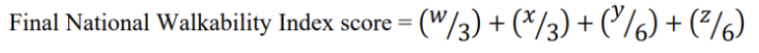

[Explanation and more intro text here]
The main variables that contribute to “walkability” of a census block group (CBG) are intersection
density, proximity to transit stops, diversity of land uses, employment mix, and employment and
household
mix.
These four variables are quantified based on the CBG's score for each variable. For simplicity and
interactivity, we
aggregated the CBGs by county. Multiple CBGs belong in each county, so we averaged the corresponding
values.
Intersection density: Higher intersection density is correlated
with
more walk trips
Proximity to transit stops:The distance in meters from the
population center to the nearest
transit
stop.
Transit stops greater than ¾ miles away were assigned a value of -99999 and not included. Shorter
distances
correlate with more walk trips.
Employment mix: The mix of employment types in a block group (such
as
retail, office, or
industrial). Higher
values correlate with more walk trips
Employment and household mix: The mix of employment types and
occupied
housing. A block group
with a diverse
set of employment types (such as office, retail, and service) plus many occupied housing units will have
a
relatively high value. Higher values correlate with more walk trips.
Click on a county to zoom in. Double click to zoom out. Shift + Drag to pan around.
The ranked scores were then weighted by the following formula:

Where:
w = block group’s ranked score for intersection density
x = block group’s ranked score for proximity to transit stops
y = block group’s ranked score for employment mix
z = block group’s ranked score for employment and household mix
The National Walkability Index is assigned for each CBG between 1 and 20, with least walkable
(1.0-5.75),
below
average
walkable (5.76-10.5), above average walkable
(10.51-15.25) and most walkable (15.26-20.0).
Now that you know what walkability is, let's go a little deeper. The Distric of Columbia provides access to hundreds of datasets found here. We composed a visualization using multiple datasets to show how complex walkability can be. Before we get started, we have to introduce some variables first.
Pedestrian Friendliness Index (PFI): DC scores each Census block showing how walkable they are, relative to other Census blocks. An area deemed ‘most walkable’ has a connected street grid with sidewalks, buildings set close to the street, and intersections and blocks that are manageable for pedestrians. It is essentially the same as walkability Block Density: Calculated by dividing total blocks by the total area of each neighborhood. A neighborhood that is more dense means that there are more buildings and people in the neighborhood. Average Metrobus Ridership: DC scores every quarter mile in grid format by average daily metrobus ridership. Areas with high average ridership are indicative of the jobs, population and activity generators within and near those grid cells. Attractions Accessible via Walk: This measures how many destinations in a neighborhood are accessible by at least 20 minutes of walking. Four Way Intersection Score: This measures how many four way intersections there are compared to dead ends and other intersections.
Overall, you can see how walkability is a complex topic that is affected by many different factors. We have visualized the walkability of the US and DC using multiple datasets. The National Walkability Index is a good starting point to understand how walkable an area is, but it is important to consider other factors such as pedestrian friendliness, block density, and metro ridership, as we examined in DC. We hope that this project has helped you understand the importance of walkability and how it can be improved in your own neighborhood!